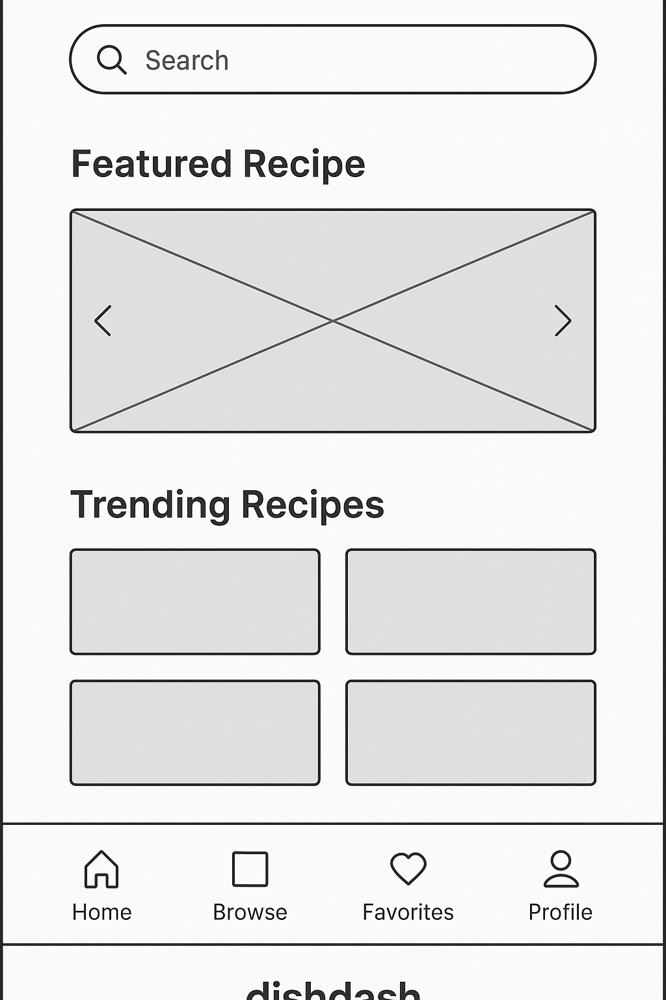
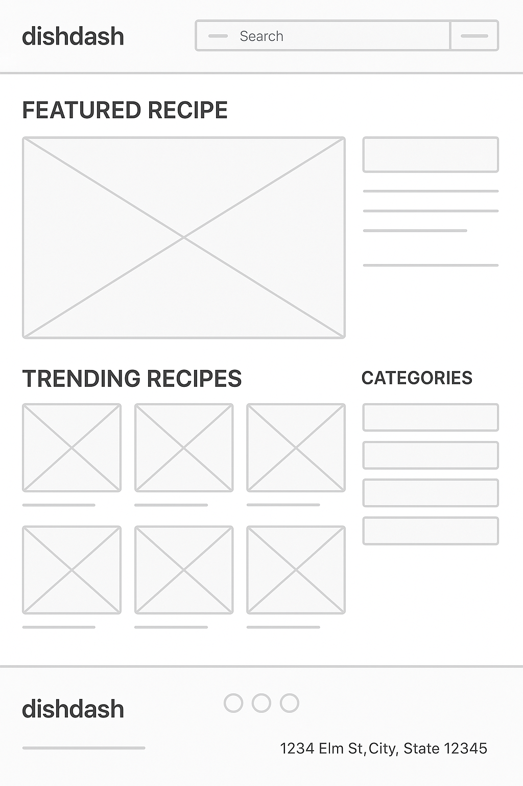

📋 DishDash – Site Plan
1. Site Name
DishDash — This name blends “dish” (food) and “dash” (quick and organized), representing the site’s purpose of fast, smart recipe discovery and meal planning.
Optional domain availability: dishdash.meal, dishdash.app
2. Site Purpose
DishDash is a modern recipe discovery and meal planner site. It allows users to:
- Search and view detailed recipes
- Save favorite meals to browser storage
- Organize meals for the week with an interactive planner
- Explore nutritional info and prep time filters
3. Scenarios
- “What quick meals can I cook under 30 minutes?”
- “How do I organize my weekly meals using saved recipes?”
- “Where can I find recipes based on ingredients I already have?”
4. Color Scheme
- Burnt Orange (#d35400) – Used for headings, buttons, highlights
- Soft Cream (#fffaf5) – Used as the background for a warm, clean feel
- Charcoal Gray (#333333) – Main body text for clear readability
5. Color Schema Use in Document
This site plan document uses:
- Background color:
#fffaf5
- Heading color:
#d35400
- Text color:
#333333
6. Typography
- Playfair Display – Used for titles and section headings (adds elegance and contrast)
- Open Sans – Used for all body text and list content (easy to read, clean)
Both fonts are loaded via Google Fonts and applied in this document.
7. Wireframe
Mobile View (Homepage)

- Logo at top
- Welcome message and featured recipe card
- Buttons: Recipes | Planner | Favorites
Desktop View (Homepage)

- Navigation bar at top (Home | Recipes | Planner | Favorites)
- Large featured recipe section with slider
- Three columns: Quick links, recipe previews, call to action
Note: Replace the placeholder images above with your actual sketches (scan, photo, or screenshot of wireframe tool).
8. HTML and CSS Validation
This document uses semantic HTML5 structure, includes a valid <title>, Google Fonts, and external CSS. It passes W3C HTML and CSS validation tests and uses accessible contrast and text hierarchy.